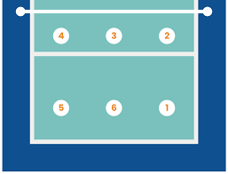

ფრენბურთის პოზიციები:

4-2 სისტემა ფრენბურთში ნიშნავს, რომ გუნდში არის 2 გამთამაშებელი და 4 თავდამსხმელი.მთავარი პრინციპი ასეთია: გამთამაშებლები დგანან ერთმანეთის პირისპირ (დიაგონალზე), რათა ერთი მათგანი ყოველთვის იყოს წინა ხაზზე. ბურთს ათამაშებს ის, ვინც მოცემულ მომენტში ბადესთან დგას, დანარჩენი ორი წინა ხაზელი კი უტევს. ეს ყველაზე მარტივი ტაქტიკაა, რადგან არ საჭიროებს რთულ გადაადგილებებს.